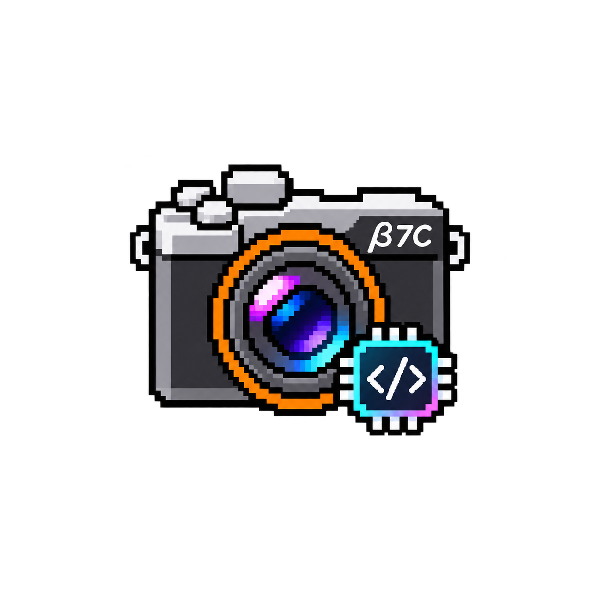

β7C
SCREEN STUDIO
0.8.12
사진을 다루는 흐름, 한 화면씩.
시안 안내
↗
03 / EDITOR
사진 편집
사진은 크게, 조정은 가까이. 저장은 언제나 같은 자리에.
현재 구성
개선 시안
접힌 세로
펼친 세로
펼친 가로
940 × 600
화면 노트
09:41
β7C · WEB DEMO
LTE ▰
인터랙티브 시안
클릭하여 탐색 · 테마와 배치 변경 가능
TRY THE FLOW
01 사진 추가
→
02 색과 왜곡 조절
→
03 레시피 저장